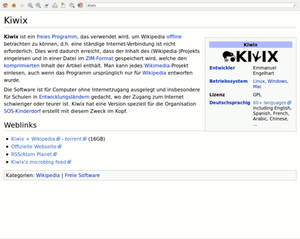

Kiwix
Dieser Artikel wurde für die folgenden Ubuntu-Versionen getestet:
Ubuntu 14.04 Trusty Tahr
Zum Verständnis dieses Artikels sind folgende Seiten hilfreich:

Kiwix  ist ein Programm, mit dem Dateien im ZIM-Format gelesen und angezeigt werden können. Insbesondere kann man es verwenden, um die Wikipedia oder das Wiki von ubuntuusers.de offline (ohne Internetzugang) zu nutzen. Mit Kiwix-serve kann ein lokaler Webserver aufgesetzt werden, um die Daten innerhalb eines lokalen Netzwerks (LAN) zu verteilen.
ist ein Programm, mit dem Dateien im ZIM-Format gelesen und angezeigt werden können. Insbesondere kann man es verwenden, um die Wikipedia oder das Wiki von ubuntuusers.de offline (ohne Internetzugang) zu nutzen. Mit Kiwix-serve kann ein lokaler Webserver aufgesetzt werden, um die Daten innerhalb eines lokalen Netzwerks (LAN) zu verteilen.
Installation¶
Das Programm ist nicht in den offiziellen Paketquellen enthalten. Es muss daher manuell installiert werden. Da bei diesem Weg eine statische Programmversion zum Einsatz kommt, werden Updates nicht automatisch durchgeführt.
Manuell¶
Zunächst lädt man sich die neueste Version von der Entwicklerseite als Archivdatei kiwix-VERSION-linux-ARCHITEKTUR.tar.bz2 
 (ca. 70 MiB) passend zur eigenen Systemarchitektur herunter.
(ca. 70 MiB) passend zur eigenen Systemarchitektur herunter.
Hinweis!
Fremdsoftware kann das System gefährden.
In einem Terminal [1] wird die Datei nun entpackt [2] und mit Root-Rechten [3] nach /opt/ [4] kopiert sowie eine Verknüpfung erstellt:
sudo tar -xvjf kiwix-VERSION-linux-ARCHITEKTUR.tar.bz2 -C /opt/ sudo ln -s /opt/kiwix/kiwix /usr/local/bin/kiwix
Kiwix kann jetzt durch Ausführen des Befehls:
kiwix
gestartet werden. Optional kann man sich einen Programmstarter kiwix.desktop anlegen:
1 2 3 4 5 6 7 8 | [Desktop Entry] Name=Kiwix Comment=Wikipedia offline betrachten Exec=kiwix Icon=/PFAD/ZU/kiwix_logo.png Terminal=false Type=Application Categories=Application;Office; |
ZIM-Dateien¶
Die Entwickler von Kiwix stellen regelmäßig aktuelle ZIM-Dateien der Wikipedia in verschiedensten Sprachen zur Verfügung. Zunächst lädt man sich die gewünschte Version von der Homepage herunter; es werden zwei Downloads angeboten. Wird neue Hardware verwendet, kann man ohne Weiteres den kleineren ersten Download wählen. Steht einem jedoch nur alte Hardware zur Verfügung, sollte man zunächst den Abschnitt Indexierung lesen und erwägen, den Index aus dem zweiten Download zu importieren. In diesem Fall verfährt man wie unter Index importieren beschrieben. Im Zweifelsfall sollte man sich eher für den zweiten Download entscheiden, die Installation ist dann zwar ein wenig umständlicher, dafür aber schneller, auch wenn etwas mehr Daten heruntergeladen werden müssen.
Wikipedia (deutsch)¶
| Bezeichnung | Dateityp | Deutsche Version | Hinweis |
| Download link | ZIM (ca. 18 Gib) | Direktlink BitTorrent | Die Datei kann direkt verwendet werden. Nach dem Download verfährt man wie unter Einlesen und Indexierung beschrieben. |
| Pre-indexed ZIM + Kiwix for Windows | ZIP (ca. 21 GiB) | Direktlink BitTorrent | Die Datei muss entpackt [1] werden, deshalb muss etwas mehr als die doppelte Größe der Datei an Speicherplatz zur Verfügung stehen. Nach dem Download verfährt man wie unter Index importieren beschrieben. |
Wiki von ubuntuusers.de¶
Hinweis:
Im Gegensatz zur Wikipedia sind die angebotenen Dateien auf dem Stand März 2017.
| Bezeichnung | Dateityp | Deutsche Version | Hinweis |
| Download link | ZIM (ca. 225 MiB) | Direktlink | Die Datei kann direkt verwendet werden. Nach dem Download verfährt man wie unter Einlesen und Indexierung beschrieben. |
| Pre-indexed ZIM + Kiwix for Windows | ZIP (ca. 344 MiB) | Direktlink BitTorrent | Die Datei muss entpackt [1] werden, deshalb muss etwas mehr als die doppelte Größe der Datei an Speicherplatz zur Verfügung stehen. Nach dem Download verfährt man wie unter Index importieren beschrieben oder startet das Wiki direkt, indem man im Verzeichnis, in dem entpackt wurde, den Befehl ./kiwix-linux/kiwix ausführt. |
Einlesen¶
Man startet Kiwix und wählt unter "Datei -> Datei öffnen" die ZIM-Datei aus. Anschließend erhält man eine Meldung
"Diese Datei enthält keinen Suchindex. Diesen zu erstellen kann mehrere Minuten dauern. Möchten Sie die ZIM-Datei jetzt indexieren?"
Um die Indexierung zu starten, bestätigt man mit "OK", andernfalls wählt man "Cancel" (s. Indexierung).
Indexierung¶
Nach der Installation funktioniert die Volltextsuche noch nicht, das heißt, man findet über die Suchmaske zwar jeden Artikel, wenn man jedoch nach einem Wort sucht, das keinen eigenen Artikel hat, erhält man obige Meldung. Wer diese Volltextsuche (s. Navigation) nicht braucht, kann Kiwix im Prinzip auch ohne einen solchen Index verwenden, allerdings wird die Meldung dann jedes Mal auftauchen, wenn man einen Begriff sendet, der kein Artikel ist. Deshalb sollte ein solcher Index erstellt werden.
Auf neuer Hardware ist dies auch kein Problem, selbst wenn es ein paar Stunden dauert. Man bestätigt dazu einfach die o.g. Meldung mit "OK" und wartet, bis der Vorgang abgeschlossen ist (der Prozessor wird dabei ausgelastet sein). Auf alter Hardware hingegen kann der Vorgang durchaus etliche Stunden dauern oder überhaupt nicht abschließen. Es besteht jedoch die Möglichkeit, einen Index zu importieren.
Da die Indexdateien selbst schnell ein paar GiB Speicherplatz beanspruchen, kann man diese nach Abschluss der Indexierung noch komprimieren. Hierzu findet man im Archiv kiwix-Version-linux-Architektur.tar.bz2 (siehe oben) ein Bash-Skript names kiwix-compact, das sich im entpackten Ordner mit [2]
./kiwix-compact
ausführen lässt.
Index importieren¶
Wenn die Indexierung auf dem Zielrechner nicht funktioniert oder zu lange dauert, kann man den Index entweder auf einem leistungsfähigerem Rechner erstellen oder aus dem Download Pre-indexed ZIM + Kiwix for Windows beziehen.
Im Folgenden wird Letzteres beschrieben, das Vorgehen ist aber im anderen Fall analog. Ferner wird bei diesem Beispiel die Datei kiwix-0.9-rc1+wikipedia_de_all_05_2012.zip benutzt und es ist darauf zu achten, dass im Pfad www.kiwix.org/kiwix/5rxrb4i1.default der String "5rxrb4i1" angepasst wird, da er im Allgemeinen nicht übereinstimmen wird.
Sofern noch nicht geschehen, öffnet man Kiwix zunächst kurz und beendet es dann wieder (dies ist notwendig, damit der Ordner ~/.www.kiwix.org/kiwix erstellt wird). Dann entpackt [1] man die Datei kiwix-0.9-rc1+wikipedia_de_all_05_2012.zip, aus dem Unterverzeichnis ./kiwix/data/ verschiebt man die Ordner content und index nach ~/.www.kiwix.org/kiwix/ (der Pfad ist im Prinzip beliebig, die Anleitung ist bei abweichendem Speicherort anzupassen.). Dann startet man Kiwix und verfährt wie unter Einlesen beschrieben: auswählen der Datei ~/.www.kiwix.org/kiwix/content/wikipedia_de_all_05_2012.zimaa, Abbruch bei der Meldung mit "Cancel" und beenden von Kiwix.
Als nächstes öffnet man die Datei ~/.www.kiwix.org/kiwix/5rxrb4i1.default/library.xml in einem Editor [5] und fügt unterhalb von:
path="/home/user/.www.kiwix.org/kiwix/content/wikipedia_de_all_05_2012.zim"
den Eintrag
indexPath="../index/wikipedia_de_all_05_2012.zim.idx/" indexType="xapian"
ein. In der Datei gibt es zwei Möglichkeiten, Pfade anzugeben. Absolute Pfade (wie hier path) dürfen kein "~" statt "/home/BENUTZERNAME" verwenden. Relative Pfade (wie hier indexPath) beziehen sich auf den Ort von library.xml. Wenn man die Datei speichert und Kiwix erneut startet, sollte die Volltextsuche funktionieren.
Bedienung¶
Kiwix¶
Navigation¶
Die Oberfläche von Kiwix ist sehr intuitiv und einfach. Über die Suchzeile findet man die verschiedenen Artikel, während der Eingabe werden bereits vorhandene Artikelnamen, die dem Muster entsprechen, vorgeschlagen. Der letzte vorgeschlagene Eintrag "containing 'Eingabe'..." verweist immer auf die Volltextsuche, für die der Index erstellt wurde. Wählt man diese aus, werden alle Artikel, in denen das Wort "Eingabe" gefunden wird, ausgegeben.
Mit einem  auf einen Link im Artikel öffnet sich die Seite in einem neuen Tab.
auf einen Link im Artikel öffnet sich die Seite in einem neuen Tab.
Bibliotheken wechseln¶
Hat man mehrere Bibliotheken installiert, so kann man zu einer jeweils anderen wechseln, indem man unter "Datei -> Bibliothek durchsuchen" die gewünschte mit "Load" auswählt.
Server¶
Unter "Werkzeuge -> Server" hat man die Möglichkeit, einen lokalen HTTP-Server auf einem beliebigen Port zu starten. Hierzu wählt man den gewünschten Port (hier: 8000) aus und klickt "Start". Anschließend kann man die Adresse http://127.0.1.1:8000 in einem Webbrowser aufrufen und die lokale Wikipedia mit diesem betrachten, Kiwix darf aber nicht beendet werden. Eine Suche steht in diesem Fall nicht zur Verfügung und man muss die URL von Hand modifizieren, um zum entsprechenden Artikel zu gelangen. Eine komfortablere Variante mit Suche ist als Kiwix-serve implementiert.
Um den Server zu beenden, wählt man in Kiwix an derselben Stelle "Stop".
Kiwix-serve¶
Wenn die statische Programmversion verwendet wird, muss das Programm zunächst verlinkt werden:
sudo ln -s /opt/kiwix/bin/kiwix-serve /usr/local/bin/kiwix-serve
Nun kann man den Server mit:
kiwix-serve --library --port=8000 --verbose ~/.www.kiwix.org/kiwix/5rxrb4i1.default/library.xml
starten. Der Pfad der library.xml ist gegebenenfalls anzupassen. In einem Webbrowser ruft man dann http://127.0.1.1:8000 auf und wählt "Load". Jetzt steht auch eine Suchfunktion zur Verfügung. Man beendet den Server im Terminal durch
Strg +
C .
Um den Server im Hintergrund zu starten, etwa im Autostart, kann man den Befehl :
kiwix-serve --library --port=8000 --daemon ~/.www.kiwix.org/kiwix/5rxrb4i1.default/library.xml
benutzen. In diesem Fall beendet man den Server mit:
pkill kiwix-serve
Problembehebung¶
Kiwix startet nicht¶
Wenn Kiwix unsachgemäß beendet wurde, erhält man beim erneuten Aufruf unter Umständen die Meldung
"Kiwix is already running, but is not responding. To open a new window, you must first close the existing Kiwix process, or restart your system."
In diesem Fall sollte man überprüfen, ob der Prozess xulrunner-bin noch läuft und diesen gegebenenfalls mit:
pkill xulrunner-bin
beenden.
- Erstellt mit Inyoka
-
 2004 – 2017 ubuntuusers.de • Einige Rechte vorbehalten
2004 – 2017 ubuntuusers.de • Einige Rechte vorbehalten
Lizenz • Kontakt • Datenschutz • Impressum • Serverstatus -
Serverhousing gespendet von